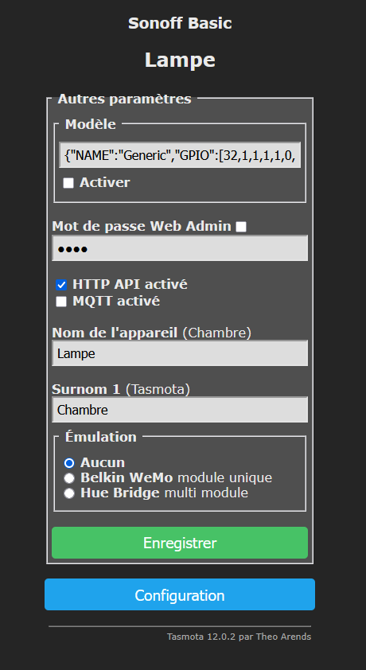
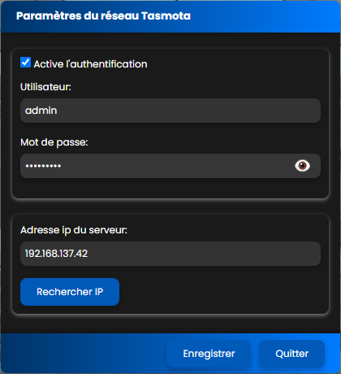

Repo : GitHub
Ce plugin permet de contrôler vos appareils Tasmota vocalement et via les widgets d'Avatar
Lors de l'initialisation du plugin tasmota le réseau local est scanné, afin de recherché vos modules comptatible tasmota
Vous trouverez la liste de vos périphériques classée par rooms dans widgets Studio
La configuration de vos périphériques tasmota doivent répondre à une configuration standardisée

- 1. Identifiant identiques
- 2. Le champs [nom de l'appareil] lampe💡 nom de la pièce où se trouve votre module
- 3. Le champs [Surnom 1] salon💡 nom de la pièce où se trouve votre module
Si vos périphériques sont configurés avec un login et mot de passe, renseignez les informations de connections dans les paramètres du plugin tasmota sauvegardez et relancze le serveur A.V.A.T.A.R.

- Alumme la lumière de la chambre [optionnel]
- Eteint la lumière du salon [optionnel]